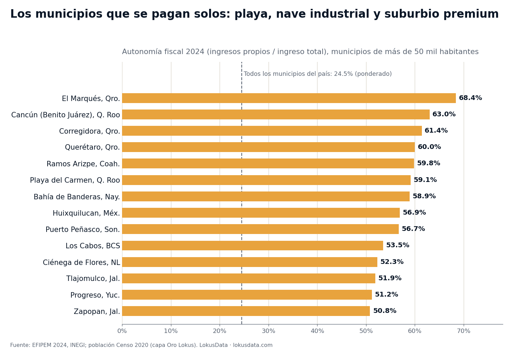
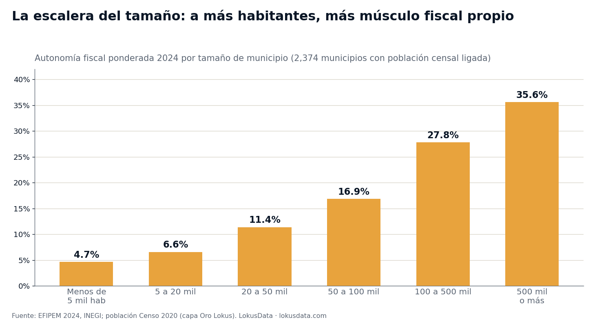

El termómetro fiscal: dónde los municipios se pagan solos — y qué revela sobre los mercados más sólidos de México
Hay un indicador público, municipio por municipio, que resume cuánto vale la propiedad y cuánto músculo tiene la economía formal de una plaza: la proporción del gobierno local que se financia con predial, derechos y licencias. Los que se pagan solos son tres tipos de mercado — playa, nave industrial y suburbio premium. Y casi nadie lo consulta antes de decidir dónde abrir.

Un indicador que casi nadie mira — y que resume todo un mercado
Cada año el INEGI publica, para cada municipio del país, cuánto de su ingreso genera la propia plaza: impuestos — el predial ante todo —, derechos, licencias, aprovechamientos. A esa proporción se le llama autonomía fiscal, y en 2024 el agregado de los 2,380 municipios con registro fue de 24.5%: de cada 100 pesos que ejerce un gobierno local mexicano, 24.5 salen de la economía de su propio territorio.
¿Por qué debería importarle ese número a un director de expansión o a un inversionista inmobiliario? Porque la recaudación local es un espejo agregado de tres cosas que cuestan mucho medir por separado: el valor real de la propiedad (el predial se cobra sobre catastro), el tamaño de la economía formal (las licencias y derechos se cobran a negocios establecidos) y la capacidad del municipio para sostener servicios urbanos sin depender de recursos que no controla. Es, en una sola cifra pública y comparable, un termómetro de solidez de mercado.
La lectura de negocio
Donde la autonomía fiscal supera 50%, hay propiedad valiosa, actividad formal densa y un gobierno local con ingresos para banquetas, seguridad y permisos ágiles. Donde no llega a 5% — la mitad de los municipios del país —, la economía formal gravable es tan delgada que el mercado opera en otra lógica: efectivo, micronegocio y canal tradicional.
El mapa: playa, nave industrial y suburbio premium
Ordenamos el universo completo de municipios por autonomía fiscal. Entre los de más de 50 mil habitantes, el top no tiene ningún misterio geográfico — tiene tres arquetipos de mercado perfectamente definidos:
- La playa: Cancún (63.0%), Playa del Carmen (59.1%), Bahía de Banderas (58.9%), Puerto Peñasco (56.7%), Los Cabos (53.5%) y Progreso (51.2%). Hoteles y segunda vivienda son base catastral de alto valor — y el turismo paga derechos todo el año.
- La nave industrial: El Marqués (68.4%, el máximo nacional entre municipios grandes), Querétaro capital (60.0%), Ramos Arizpe (59.8%) y Ciénega de Flores (52.3%). Los parques industriales son contribuyentes gigantes y estables.
- El suburbio premium: Huixquilucan (56.9%), Corregidora (61.4%), Tlajomulco (51.9%) y Zapopan (50.8%) — vivienda residencial de alta plusvalía que sostiene la caja local.
Nótese lo que no aparece: ni los grandes centros históricos del Bajío tradicional, ni las capitales del sur, ni la mayoría de las ciudades medias del interior. El mapa de los municipios que se pagan solos es, casi punto por punto, el mapa de los mercados donde la propiedad se aprecia y la economía formal crece: los mismos corredores turísticos e industriales que aparecen una y otra vez en nuestros análisis de expansión.
El predial per cápita: dónde la propiedad realmente vale
Si la autonomía es el termómetro, la recaudación de impuestos por habitante es el grado exacto de la fiebre. Entre los municipios de más de 100 mil habitantes, la tabla la encabeza — por mucho — San Pedro Garza García: $12,402 pesos por habitante al año solo en impuestos municipales, más del triple que Querétaro capital. El top 10 es una lista de precios del suelo mexicano:
| Municipio | Impuestos por habitante 2024 | Autonomía fiscal | Tipo de mercado |
|---|---|---|---|
| San Pedro Garza García, NL | $12,402 | 48.4% | Suburbio premium |
| El Marqués, Qro. | $10,218 | 68.4% | Corredor industrial |
| Los Cabos, BCS | $5,651 | 53.5% | Turismo |
| Huixquilucan, Méx. | $5,557 | 56.9% | Suburbio premium |
| Corregidora, Qro. | $4,688 | 61.4% | Suburbio / industrial |
| Playa del Carmen, Q. Roo | $4,325 | 59.1% | Turismo |
| Bahía de Banderas, Nay. | $4,261 | 58.9% | Turismo |
| Ramos Arizpe, Coah. | $3,550 | 59.8% | Corredor industrial |
| Querétaro, Qro. | $3,257 | 60.0% | Metrópoli industrial |
| San Miguel de Allende, Gto. | $2,981 | 37.3% | Turismo residencial |
Impuestos municipales recaudados por habitante, municipios de más de 100 mil habitantes, 2024. Fuente: EFIPEM 2024, INEGI; población del Censo 2020. La clasificación de tipo de mercado es analítica de Lokus.
La escalera del tamaño: el volumen construye músculo fiscal

La relación entre tamaño de mercado y solidez fiscal es una escalera casi perfecta: 4.7% de autonomía en municipios de menos de 5 mil habitantes, 16.9% entre 50 y 100 mil, 35.6% arriba de 500 mil. La escala urbana concentra propiedad formal, comercio establecido y servicios — exactamente lo que un gobierno local puede gravar y lo que una marca puede atender. Pero los arquetipos del top rompen la escalera hacia arriba: El Marqués (232 mil habitantes) o Puerto Morelos (27 mil, 68.4% de autonomía, la máxima del país) rinden como metrópolis fiscales siendo mercados medianos. Eso es señal pura: ahí el valor por habitante — de la propiedad, del turismo, de la industria — es extraordinariamente alto para su tamaño.
El otro extremo del termómetro: los mercados de efectivo
La mitad de los municipios del país — 1,178 de 2,380 — genera menos de 5% de su ingreso localmente, y 596 no llegan ni a 2%. Agregado por estado, los municipios de Chiapas promedian 5.1% de autonomía; los de Oaxaca y Tabasco, 9.1%. Y no todos son pueblos pequeños: 37 municipios de más de 50 mil habitantes están debajo de 5%, incluidos mercados de 100 a 235 mil personas como Ocosingo, Las Margaritas o Chamula, en Chiapas.
Para una decisión de expansión, ese dato no dice "no hay mercado": dice qué tipo de mercado hay. Una plaza donde el gobierno local casi no recauda predial ni licencias es una plaza donde la propiedad formal registrada es escasa y el grueso de la actividad ocurre en micronegocio y efectivo — el territorio del canal tradicional, la tiendita y la venta por catálogo, no del formato anclado en ticket promedio alto. Es la misma geografía que vimos en nuestro análisis del mercado informal: los dos indicadores se confirman mutuamente desde fuentes distintas.
Insights para la acción
- Usa la autonomía fiscal como filtro de screening territorial: es pública, anual, cubre 2,380 municipios y resume valor inmobiliario + formalidad + capacidad de servicios en un solo número. Arriba de 40%, plaza sólida; debajo de 10%, mercado de efectivo y canal tradicional.
- El predial per cápita es un avalúo gratuito: la lista de municipios que más impuestos recaudan por habitante — San Pedro, El Marqués, Los Cabos, Huixquilucan — es una lista de dónde el suelo vale y se aprecia. Para inversión inmobiliaria o formatos premium, ahí está el shortlist.
- Los sobrecalificados fiscales son las joyas del mapa: municipios medianos que recaudan como metrópolis — Puerto Morelos, El Marqués, Ramos Arizpe, Bahía de Banderas — tienen más valor económico por habitante del que su tamaño sugiere. Suelen ser mercados donde la demanda de servicios de calidad va por delante de la oferta.
- En el extremo bajo, adapta el modelo en lugar de descartar la plaza: 15 millones de personas viven en los municipios con autonomía menor a 5% (Censo 2020). Ahí ganan los formatos de proximidad, precio bajo, efectivo y distribución capilar — no el retail de centro comercial.
Conclusión
Los estados financieros de los gobiernos locales son, leídos con ojos de mercado, uno de los datasets de inteligencia territorial más subutilizados de México. Nadie elige dónde abrir mirando cuánto predial cobra el municipio — y sin embargo esa cifra condensa el valor de la propiedad, la densidad de la economía formal y la calidad del entorno operativo mejor que la mayoría de los estudios de plaza. El termómetro ya está puesto: playa, nave industrial y suburbio premium marcan 50 grados y subiendo; la mitad del país marca menos de 5. La ventaja no está en el dato — es público desde hace veinte años —, está en ser de los primeros en leerlo.
Análisis basado en la Estadística de Finanzas Públicas Estatales y Municipales (EFIPEM) del INEGI, ejercicio 2024 (2,380 municipios con registro; serie 2003-2024), consultada en la capa de datos validada de Lokus. Autonomía fiscal = ingresos generados localmente (impuestos, derechos, productos, aprovechamientos y contribuciones de mejoras) entre ingreso total; los agregados son ponderados por ingresos. Población: Censo de Población y Vivienda 2020, INEGI (metodología distinta, usada solo como denominador). Montos en pesos corrientes 2024. Las 16 alcaldías de la CDMX operan bajo un régimen presupuestal distinto y quedan fuera del comparativo. Fecha de análisis: 31 de julio de 2026. Para dimensionar el mercado, la competencia y el perfil de cualquier municipio con datos oficiales integrados, visita lokusdata.com